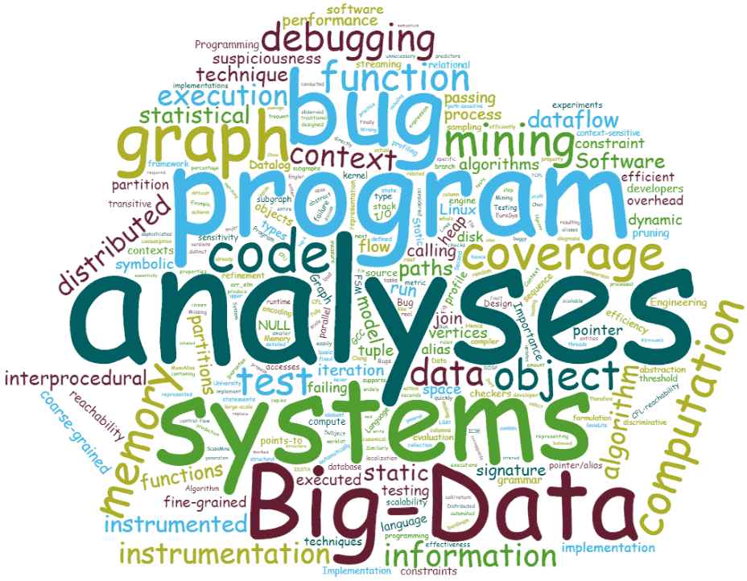

719 Computer Science Building
zqzuo AT nju.edu.cn
163 Xianlin Road, Qixia District, Nanjing, China

About Me
I am now an associate researcher in the Department of Computer Science & Technology, Nanjing University, China.
Before joining NJU, I got my PhD from National University of Singapore in 2015, and worked as a postdoc scholar at University of California, Irvine from 2015 to 2017.
I am recruiting PhD, Master and Undergraduate students. If interested, please feel free to drop me an email.
现招收博士、硕士以及南京大学本科生，对系统软件、编译器、大数据系统方向感兴趣的同学，欢迎随时邮件联系。
Research Interests
System software
Compilers and runtimes
Program analysis
My research interests span Programming Languages, Software Engineering, and Systems.
I have been recently focusing on building and customizing systems software
(e.g., compilers, runtime environments, Big Data and operating systems) for various applications,
such as program analyses, profiling, security enforcement, and SAT/SMT solving.
News
• [2021.7] Invited to serve on the program committee (PC) of the ACM Joint Meeting on European Software Engineering Conference and Symposium on the Foundations of Software Engineering (FSE'22).
• [2021.7] Invited to serve on the external review committee (ERC) for the ACM International Conference on Architectural Support for Programming Languages and Operating Systems (ASPLOS'22).
• [2021.7] Invited to serve on the program committee (PC) for the 43rd ACM SIGPLAN Conference on Programming Language Design and Implementation (PLDI'22).
• [2021.5] A grant is funded from NJU-Huawei Joint Innovation Lab to support our research on low-overhead memory safety enforcement. Thanks Huawei!
• [2021.5] GPU-backed static analysis engine was accepted to TOCS.
• [2021.4] RegionFuzz was accepted with minor revision to JCST'21.
• [2021.4] Our Taifu paper was conditionally accepted to ISSTA'21.
• [2021.2] Both Chianina and JPortal were conditionally accepted to PLDI'21.
•
[2020.12] Received an Alibaba Innovation Research (AIR) Award to support our research on data integrity enforcement of distributed storage systems. Thanks Alibaba!
•
[2020.11] The journal version of BigSpa was accepted to TPDS.
•
[2020.8] Our SymO3 paper for out-of-order symbolic execution was conditionally accepted to OOPSLA'20.
•
[2020.7] Invited to serve on the program committee (PC) for the 14th Innovations in Software Engineering Conference ISEC'21.
•
[2020.6] Another grant is funded from Huawei to support our work on static analysis for performance tuning. Thanks Huawei!
•
[2020.4] A grant is funded from NJU-Huawei Joint Innovation Lab to support our research on safe language design and implementation. Thanks Huawei!
•
[2020.3] Invited to serve on the program committee (PC) for the 12th Asia-Pacific Symposium on Internetware Internetware'20.
•
[2019.12] Our SpecuSym paper for speculative symbolic execution was accepted to ICSE'20.
•
[2019.12] A brief survey paper of parallel static analysis was accepted with minor revision to Chinese Journal of Software.
•
[2019.9] A grant (general program) is funded from NSF of Jiangsu Province.
•
[2019.8] Our Cod paper for coverage profiler testing was accepted to ASE'19.
•
[2019.6] Invited to serve on the external review committee (ERC) for ASPLOS'20.
•
[2019.6] Invited to serve on the program committee (PC) for the 13th Innovations in Software Engineering Conference ISEC'20.
•
[2019.5] The presentation video and audio of Grapple at EuroSys'19 are available.
•
[2019.1] Our BigSpa paper was accepted to IPDPS'19.
•
[2019.1] Invited to give talks on "Systemized Program Analysis" at The University of Queensland and Griffith University, Australia.
•
[2018.12] Our Grapple paper was accepted to EuroSys'19.
•
[2018.12] Our ML-based memory leak detection paper was accepted to Chinese Journal of Software. My first paper in Chinese!
•
[2018.12] Our code coverage testing paper was accepted to ICSE'19.
† Research papers over 10 pages at top tier venues are marked as red. indicates corresponding author.
2021
Systemizing Interprocedural Static Analysis of Large-Scale Systems Code with Graspan by Zhiqiang Zuo, Kai Wang, Aftab Hussain, Ardalan Amiri Sani, Yiyu Zhang, Shenming Lu, Wensheng Dou, Linzhang Wang, Xuandong Li, Chenxi Wang, and Guoqing Harry Xu.
accepted to ACM Transactions on Computer Systems,
(TOCS'21),
2021.
(This is an extended journal version of our ASPLOS'17 paper by adding a GPU-accelerated analysis backend.)
Vulnerable Region-Aware Greybox Fuzzing by Lingyun Situ, Zhiqiang Zuo, Le Guan, Linzhang Wang, Xuandong Li, Jin Shi, and Peng Liu.
accepted to the Journal of Computer Science and Technology,
(JCST'21),
2021.
Identifying Privacy Weaknesses from Multi-Party Trigger-Action Integration Platforms by Kulani Tharaka Mahadewa, Yanjun Zhang, Guangdong Bai, Lei Bu, Zhiqiang Zuo, Dileepa Fernando, Zhenkai Liang, and Jin Song Dong.
In Proceedings of the ACM SIGSOFT International Symposium on Software Testing and Analysis,
(ISSTA'21),
Virtual, July 11-17, 2021.
JPortal: Precise and Efficient Control-Flow Tracing for JVM Programs with Intel Processor Trace by Zhiqiang Zuo, Kai Ji, Yifei Wang, Wei Tao, Linzhang Wang, Xuandong Li, and Guoqing Harry Xu.
In Proceedings of the 42nd ACM SIGPLAN Conference on Programming Language Design and Implementation,
(PLDI'21),
Virtual, June 20-25, 2021.
Chianina: An Evolving Graph System for Flow- and Context-Sensitive Analyses of Million Lines of C Code by Zhiqiang Zuo, Yiyu Zhang, Qiuhong Pan, Shenming Lu, Yue Li, Linzhang Wang, Xuandong Li, and Guoqing Harry Xu.
In Proceedings of the 42nd ACM SIGPLAN Conference on Programming Language Design and Implementation,
(PLDI'21),
Virtual, June 20-25, 2021.
Towards Efficient Large-Scale Interprocedural Program Static Analysis on Distributed Data-Parallel Computation by Rong Gu, Zhiqiang Zuo, Xi Jiang, Han Yin, Zhaokang Wang, Linzhang Wang, Xuandong Li, and Yihua Huang.
In IEEE Transactions on Parallel and Distributed Systems,
(TPDS'21), Vol. 32, No. 4, April 2021.
(This is an extended journal version of our IPDPS'19 paper by adding the support for online incremental analysis.)
2020
Incremental Network Configuration Verification by Peng Zhang, Yuhao Huang, Aaron Gember-Jacobson, Wenbo Shi, Xu Liu, Hongkun Yang, and Zhiqiang Zuo.
In Proceedings of the 19th ACM Workshop on Hot Topics in Networks,
(HotNets'20),
Chicago, Illinois, USA, November 5-6, 2020.
Exposing Cache Timing Side-Channel Leaks through Out-of-Order Symbolic Execution by Shengjian Guo, Yueqi Chen, Jiyong Yu, Meng Wu, Zhiqiang Zuo, Peng Li and Yueqiang Cheng.
In Proceedings of the ACM SIGPLAN Conference on Object-Oriented Programming Systems, Languages, and Applications,
(OOPSLA'20),
Illinois, United States, November 15-20, 2020.
SpecuSym: Speculative Symbolic Execution for Cache Timing Leak Detection by Shengjian Guo, Yueqi Chen, Peng Li, Yueqiang Cheng, Huibo Wang, Meng Wu and Zhiqiang Zuo.
In Proceedings of the 42nd International Conference on Software Engineering, (ICSE'20),
Seoul, South Korea, May 23-29, 2020.
A Brief Survey of Parallel Static Analysis (In Chinese) by Shenming Lu, Zhiqiang Zuo, and Linzhang Wang.
In Journal of Software, (软件学报),
Vol. 31, No. 5, May 2020.
2019
Automatic Self-Validation for Code Coverage Profilers by Yibiao Yang, Yanyan Jiang, Zhiqiang Zuo, Yang Wang, Hao Sun, Hongmin Lu, Yuming Zhou, and Baowen Xu.
In Proceedings of the 34th IEEE/ACM International Conference on Automated Software Engineering, (ASE'19),
San Diego, CA, USA, November 11-15, 2019.
BigSpa: An Efficient Interprocedural Static Analysis Engine in the Cloud by Zhiqiang Zuo, Rong Gu, Xi Jiang, Zhaokang Wang, Yihua Huang, Linzhang Wang, and Xuandong Li.
In Proceedings of the 33rd IEEE International Parallel & Distributed Processing Symposium, (IPDPS'19),
Rio de Janeiro, Brazil, May 20-24, 2019.
Grapple: A Graph System for Static Finite-State Property Checking of Large-Scale Systems Code by Zhiqiang Zuo, John Thorpe, Yifei Wang, Qiuhong Pan, Shenming Lu, Kai Wang, Harry Xu, Linzhang Wang, and Xuandong Li.
In Proceedings of the European Conference on Computer Systems, (EuroSys'19),
Dresden, Germany, March 25-28, 2019.
Machine Learning-Based Memory Leak Detection for C Programs (In Chinese) by Yawei Zhu, Zhiqiang Zuo, Linzhang Wang, and Xuandong Li.
In Journal of Software, (软件学报),
Vol. 30, No. 5, May 2019.
Hunting for Bugs in Code Coverage Tools via Randomized Differential Testing by Yibiao Yang, Yuming Zhou, Hao Sun, Zhendong Su, Zhiqiang Zuo, Lei Xu, and Baowen Xu.
In Proceedings of the 41st International Conference on Software Engineering, (ICSE'19),
Montréal, QC, Canada, May 25–31, 2019.
2018
RStream: Marrying Relational Algebra with Streaming for Efficient Graph Mining on A Single Machine by Kai Wang, Zhiqiang Zuo, John Thorpe, Tim Nguyen, and Guoqing Xu.
In Proceedings of USENIX Symposium on Operating System Design and Implementation, (OSDI'18),
Carlsbad, CA, USA, October 8–10, 2018.
Calling-to-Reference Context Translation
via Constraint-Guided CFL-Reachability by Cheng Cai, Qirun Zhang,
Zhiqiang Zuo, Khanh Nguyen, Harry Xu, and Zhendong Su.
In Proceedings of ACM SIGPLAN Conference on Programming
Language Design and Implementation, (PLDI'18),
Philadelphia, PA, USA, June 18-22, 2018.
Before 2018
Graspan:
A Single-Machine Disk-Based Graph System for Interprocedural
Static Analyses of Large-Scale Systems Code by Kai Wang, Aftab Hussain,
Zhiqiang Zuo, Guoqing (Harry) Xu and Ardalan Amiri
Sani. In Proceedings of the 22nd ACM
International Conference on Architectural Support for
Programming Languages and Operating Systems, (ASPLOS'17),
Xi'an, China, April 8 - 12, 2017.
Low-Overhead
and Fully Automated Statistical Debugging with Abstraction
Refinement by Zhiqiang Zuo, Lu Fang,
Siau-Cheng Khoo, Guoqing (Harry) Xu and Shan Lu. In
Proceedings of the ACM SIGPLAN Conference on
Object-Oriented Programming Systems, Languages, and
Applications, (OOPSLA'16),
Amsterdam, The Netherlands, Oct. 30 - Nov. 4, 2016.
Efficient
Predicated Bug Signature Mining via Hierarchical
Instrumentation by Zhiqiang Zuo, Siau-Cheng Khoo and
Chengnian Sun. In Proceedings of the 2014
International Symposium on Software Testing and Analysis, (ISSTA'14), San
Jose, CA, USA, July 21-25, 2014.
Efficient
Statistical Debugging via Hierarchical Instrumentation by Zhiqiang Zuo. In Proceedings
of the 2014 International Symposium on Software Testing and
Analysis, (ISSTA'14
Doctoral Symposium), San Jose, CA, USA, July 21-25, 2014.
Mining
Dataflow Sensitive Specifications by Zhiqiang Zuo and Siau-Cheng Khoo.
In Proceedings of the 15th International Conference on
Formal Engineering Methods, (ICFEM'13),
Queenstown, New Zealand, Oct. 29 - Nov. 1, 2013.
Reports
"Systemized" Program Analyses – A "Big Data" Perspective on Scaling Large-Scale Code Analyses
[pdf]
by Guoqing (Harry) Xu, Zhiqiang Zuo, Kai Wang, Aftab Hussain, and Khanh Nguyen.
Technical report,
2017.
Refinement
Techniques in Mining Software Behavior [pdf]
by Zhiqiang Zuo. Dissertation,
February 2015.
Iterative
Statistical Bug Isolation via Hierarchical Instrumentation [pdf]
by Zhiqiang Zuo and Siau-Cheng Khoo.
In DSpace at School of Computing, NUS, (TRC7-14).
Tutorials
"Systemized"
Program Analyses – A "Big Data" Perspective on Static
Analysis Scalability [link]
by Guoqing (Harry) Xu and Zhiqiang
Zuo. At the 22nd ACM International Conference on
Architectural Support for Programming Languages and Operating
Systems, (ASPLOS'17),
Xi'an, China, April 8 - 12, 2017.
Talks
Safe C/C++ Design and Implementation
At Network Security Technology Forum,
Songshan Lake, China, Sep. 10-11, 2020.
Systemizing Program Analysis of Large-Scale Systems Code
At Xia Peisu Forum, Institute of Computing Technology, Chinese Academy of Sciences,
Online, Sep. 3-4, 2020.
Systems Support for Program Analysis, Profiling, and Synthesis
At Nanjing University,
Nanjing, China, Dec. 9, 2019.
Grapple: A Graph System for Static Finite-State Property Checking of Large-Scale Systems Code
At the European Conference on Computer Systems, (EuroSys'19),
Dresden, Germany, March 25-28, 2019.
"Systemized" Program Analysis -- A "Big Data" Perspective
At Tianjin University,
Tianjin, China, Sep. 17, 2019.
At Griffith University,
Brisbane, Australia, Jan. 18, 2019.
At University of Queensland,
Brisbane, Australia, Jan. 15, 2019.
Systems Support for Sophisticated Program Analysis
At the 2018 Workshop on Software Analysis and Verification, (SAVE'2018),
Hangzhou, China, May 26-27, 2018.
At the 2018 Annual Meeting of Jiangsu Provincial Computer Software Committee,
Yangzhou, China, May 12-13, 2018.
At University of California, Los Angeles, (UCLA),
LA, CA, USA, Jan. 26, 2018.
Towards Highly Scalable Static and Dynamic Program Analysis
At Nanjing University,
Nanjing, China, Sep. 21, 2017.
At Tianjin University,
Tianjin, China, April 20, 2017.
"Big Data Thinking" for Highly Scalable Static Program Analyses
At Shanghai Jiao Tong University,
Shanghai, China, May 4, 2017.
At Nanjing University,
Nanjing, China, May 2, 2017.
Low-Overhead and Fully Automated Statistical Debugging with Abstraction Refinement
At the ACM SIGPLAN Conference on Object-Oriented Programming Systems, Languages, and Applications, (OOPSLA’16),
Amsterdam, The Netherlands, Oct. 30 - Nov. 4, 2016.
Efficient Predicated Bug Signature Mining via Hierarchical Instrumentation
At the 2014 International Symposium on Software Testing and Analysis, (ISSTA’14),
San Jose, CA, USA, July 21-25, 2014.
Statistical Debugging via Hierarchical Instrumentation
At the 2014 International Symposium on Software Testing and Analysis, (ISSTA’14 Doctoral Symposium),
San Jose, CA, USA, July 21-25, 2014.
Mining Dataflow Sensitive Specifications
At the 15th International Conference on Formal Engineering Methods, (ICFEM’13),
Queenstown, New Zealand, Oct. 29 - Nov. 1, 2013.
Grants & Awards
PI, National Natural Science Foundation of China [Young Scientists Program], 2019.1-2021.12, Grant No. 61802168, (Systemized Static Analysis)
PI, Natural Science Foundation of Jiangsu Province [General Program], 2019.7-2022.6, Grant No. BK20191247, (GPU-based Static Analysis)
Co-PI, National Natural Science Foundation of China [Key Program], 2020.1-2024.12, Grant No. 61932021, (Self-adaptive Complex Software Systems Design)
Co-PI, National Natural Science Foundation of China [Key Program], 2021.1-2025.12, Grant No. 62032010, (IoT Firmware Fuzzing)
PI, NJU-Huawei Joint Innovation Lab, 2020.4-2021.3, (Safe Language Design and Implementation)